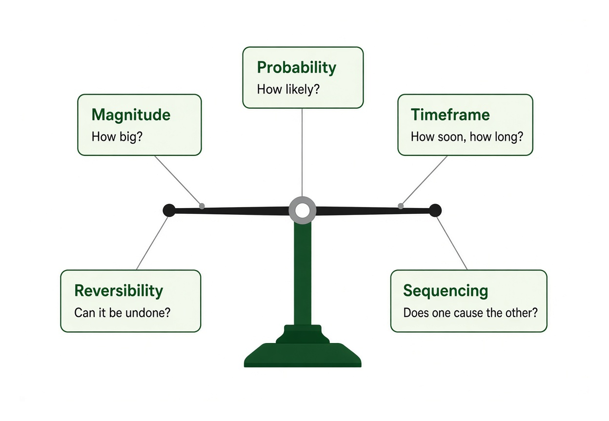

Chapter 10: Judges and Weighing
In this chapter
Move: Weigh. Builds on: Chapters 1 and 4. Where you use it: before every debate, when you size up your judge, and at the end of every debate, when you tell that judge why your impacts matter more.
Objectives
By the end of this chapter you should be able to:
- Analyze an audience using four elements: interests, understanding, attitudes and beliefs.
- Adapt a speech's content, wording and delivery to a particular judge.
- Describe the differences between lay and technical judges and adjust for each.
- Compare impacts using five weighing terms: magnitude, probability, timeframe, reversibility and sequencing.
- Deliver weighing a judge can use to decide.
Key terms
Audience analysis, interests, understanding, attitudes, beliefs, lay judge, technical judge, judge philosophy, impact calculus, magnitude, probability, timeframe, reversibility, sequencing.
The idea
10.1 Knowing your judge
Chapter 1 ended with the point that the receiver matters most: you do not win by being right in the abstract, you win by convincing a specific judge. This chapter turns that idea into a method. Audience analysis is the process of identifying an audience and adapting a speech to their interests, level of understanding, attitudes and beliefs. Each of those four elements is a question you can ask about any judge.
Interests are how much your audience wants to know about a topic. A judge who follows technology news is already interested in an AI debate; a judge who does not may need a reason to care in your first thirty seconds. You adapt to interest mostly through content: lead with the example most likely to matter to this person, and connect abstract stakes to concrete people.
Understanding is how well your audience grasps the meaning you intend. It depends on what the judge already knows about the topic and about debate. A judge who has never heard the term "internal link" will not follow an argument built on it. You adapt to understanding through word choice and explanation: define terms the first time you use them, swap jargon for plain words, and slow down for the steps that carry the most weight.
Attitudes are the positive or negative feelings your audience already has toward your content or your delivery. One judge loves fast, dense debate; another is annoyed by it. One finds jokes welcome; another finds them unprofessional. You adapt to attitudes through delivery and tone, and through timing: how you spend your speech time signals what you think matters.
Beliefs are the statements your audience holds to be true before you say a word. A judge who believes technology always creates more jobs than it destroys is a different audience for the AI fact debate than one who believes the opposite. You do not need to share a judge's beliefs, and you should never pretend to. You adapt to beliefs through content: acknowledge the belief, show you have taken it seriously, and give the judge a reason to set it aside for this debate. A judge asked to reverse a belief needs more evidence and better explanation than a judge asked to confirm one.
At a glance
| Element | The question | How you adapt |
|---|---|---|
| Interests | How much does this judge want to know about the topic? | Content: lead with what will matter to them |
| Understanding | What does this judge already know about the topic and about debate? | Word choice, definitions, explanation, pace |
| Attitudes | How does this judge feel about my content and style? | Delivery, tone and how I spend my time |
| Beliefs | What does this judge already hold to be true? | Content: acknowledge the belief and give reasons to set it aside |
10.2 Lay and technical judges
Judges vary on a range from lay to technical. A lay judge has little or no debate experience: a community member, a parent, a teacher from another field, or a classmate. A lay judge decides the way most audiences do, by asking which side made more sense and seemed more credible. They are less likely to flow carefully, less likely to know debate vocabulary, and more likely to be influenced by clear structure, confident delivery and good examples.
A technical judge has debate experience, often as a former competitor or coach. Technical judges flow closely, know the vocabulary, and tend to decide on the arguments as they stand on the flow at the end of the debate: which were answered, which were dropped, and how the debaters told them to weigh what was left. They are more willing to vote on an argument a lay judge would find strange, as long as it was won.
The difference is easy to overstate. Both kinds of judges reward clear structure, explained warrants and explicit weighing; the difference is mostly in how much explanation they need and how much debate shorthand they accept. The safe adjustment for a lay judge is to slow down, cut the jargon, use fewer arguments explained more fully, and spell out why each one matters. The adjustment for a technical judge is to make sure every important argument is on the flow and extended, and to answer every argument your opponent could win on. If you are not sure which kind of judge you have, debate for a smart person who is new to debate. Both kinds of judges can follow that.
Many tournaments ask judges to write a judge philosophy, a short statement of how they decide debates, what they like and what they dislike. In a class, your instructor is often your judge, and the rubric and comments are their philosophy. Read it, and adapt to it. Adapting is not pandering; it is communicating with the person in front of you.
10.3 Weighing: impact calculus
Most debates end with both sides winning something. The affirmative has an impact left on the Scale, and so does the negative. The judge then has to decide which matters more, and if the debaters do not tell them how, the judge will decide on their own, which is the outcome you least want. Impact calculus is the direct comparison of impacts, and of the scenarios that lead to them, in a debate. It is the closest thing debate has to a key that opens every lock: in most close debates, the side that does the better weighing wins.

Five terms give you the comparisons. The first three apply in almost every debate.
Magnitude is how severe an impact is, whether measured in numbers ("ten million jobs") or described in quality ("the loss of the right to vote"). Magnitude asks: how big? An impact that affects more people, or affects them more deeply, has greater magnitude. Students often reach for magnitude first, and it is powerful, but it is rarely enough on its own. A huge impact that is very unlikely may not outweigh a smaller one that is nearly certain.
Probability is the comparative likelihood that an impact happens. Probability asks: how likely? It depends on the strength of every link in the chain that leads to the impact. Chapter 14 will show that each step in a chain adds a chance to fail, which is why a short, well-evidenced chain to a moderate impact can outweigh a long, speculative chain to a catastrophe.
Timeframe is how soon an impact happens and how long it lasts. Timeframe asks: how soon, and for how long? An impact that happens tomorrow can come before one decades away, since the near-term impact cannot wait while the long-term one may still be prevented. But timeframe cuts both ways: an impact that lasts for generations may outweigh a sharp but brief one.
Two more terms apply in fewer debates, and win them when they do.
Reversibility is the degree to which an impact can be undone once it happens. Reversibility asks: can it be fixed? A recession is terrible but economies recover; a species, once extinct, is gone. When one side's impact is permanent and the other's is not, reversibility gives the judge a strong reason to prevent the permanent one first.
Sequencing is how one impact affects whether another will happen. Sequencing asks: does one cause the other? If your opponent's impact is mass starvation and your impact is a war that would itself cause mass starvation, then preventing your impact prevents theirs too. Sequencing is often the strongest weighing argument available, because it does not ask the judge to choose between impacts at all. It shows that one impact contains the other.
At a glance
| Term | The question | Example argument |
|---|---|---|
| Magnitude | How big? | "Our impact affects millions; theirs affects one industry." |
| Probability | How likely? | "Our impact needs two steps, both with evidence; theirs needs five." |
| Timeframe | How soon, and how long? | "Our harm is happening now; theirs is decades away." |
| Reversibility | Can it be undone? | "A recession ends; a lost species does not come back." |
| Sequencing | Does one cause the other? | "The war causes the starvation, so preventing the war prevents both." |
10.4 Weighing that wins
Knowing the terms is not the same as weighing well. Three habits make the difference.
First, compare, do not just describe. "Our impact is very large" is description. "Our impact is larger than theirs because it affects every worker, not just one industry" is weighing. Every weighing argument should mention both impacts.
Second, weigh on more than one term, and answer your opponent's weighing. If your opponent says their impact is bigger and you say yours is more likely, the judge now has to weigh the weighing. Help them: explain why probability matters more than magnitude in this debate, for example because the opponent's chain is so speculative that its size does not matter.
Third, start early. Weighing saved for the last thirty seconds of the last speech is rushed and easy to miss. Strong debaters set up their weighing in their first speech ("this impact is irreversible, and that will matter at the end of the debate") and build it through every speech after.
Say it
- Magnitude: "Even if they win their impact, ours is bigger, because..."
- Probability: "Their impact depends on five things all going wrong. Ours is already happening."
- Timeframe: "Our impact comes first. Theirs is decades away and can still be prevented."
- Reversibility: "Their harm can be undone. Ours cannot."
- Sequencing: "Our impact causes theirs, so voting for us solves both."
- For a lay judge: "Here's what this means for real people..."
Worked examples
A personal decision
Resolution: Students should start at a community college rather than a four-year university.
The judge is a parent volunteer, a lay judge who believes, from their own experience, that the four-year campus experience matters. The affirmative's audience analysis says: interested (they care about students), limited debate understanding, positive attitude toward clear explanation, and a belief against the resolution. So the affirmative acknowledges the belief up front ("the campus experience is real, and we're not dismissing it"), uses plain words, and weighs explicitly: its impact (lower debt) is more probable, since it happens to every student who saves on tuition, and less reversible, since debt follows students for years, while the campus experience is partly available to transfer students later. Every weighing claim names both impacts.
A global prediction
Resolution: Artificial intelligence does more harm than good.
The affirmative's impact is long-term job displacement; the negative's is faster medical research that saves lives. The negative weighs on magnitude and timeframe: lives saved now, against economic harm that may be temporary. The affirmative answers with probability and sequencing: the medical benefits depend on several uncertain steps, while displacement is already measurable, and widespread job loss would reduce access to the very healthcare the negative's impact depends on. The judge, a technical judge, now has two competing frames. Whoever explains why their frame should come first in this debate wins the ballot.
How a judge weighs it
Judges look for the debater who tells them how to decide. Without weighing, a judge has to compare impacts on their own and may use standards neither side argued. With weighing from only one side, that side's frame usually wins. With weighing from both sides, the judge looks for who compared more directly, answered the other side's weighing, and connected the weighing to the evidence on the flow.
Common mistakes
- Describing instead of comparing. Weighing has to mention both impacts.
- Only arguing magnitude. A huge, unlikely impact can lose to a smaller, certain one.
- Weighing too late. Set up your weighing early and build it through the debate.
- Ignoring the opponent's weighing. If both sides weigh, explain why your frame should come first.
- Debating the same way for every judge. Adjust explanation, pace and vocabulary to the person deciding.
Practice
Drill: weigh it (15 minutes, pairs). Your instructor gives pairs of impacts, such as an economic collapse tomorrow against climate change over decades, or a nuclear war against mass starvation. One partner weighs for the first impact in thirty seconds using at least two terms; the other answers, using at least one different term, and explains why their frame should come first. Switch.
Drill: same speech, two judges (15 minutes, small groups). Give a one-minute version of a contention to a "technical judge," then to a "lay judge." The group names three things that changed between the versions.
Writing exercise. Pick a judge you might face in this class, such as a classmate, your instructor or a guest judge, and write a 200-word audience analysis covering all four elements. Then write the two weighing sentences you would deliver to that judge at the end of the AI value debate.
Check questions
Choose an answer to see feedback. Nothing is recorded.
1. A judge already believes technology always creates more jobs than it destroys. Which element of audience analysis is this?
2. You aren't sure whether your judge is lay or technical. What's the safest approach?
3. "Our impact causes theirs, so preventing ours prevents both." Which weighing term is this?
4. Why is magnitude rarely enough on its own?
5. Which is an example of weighing rather than description?